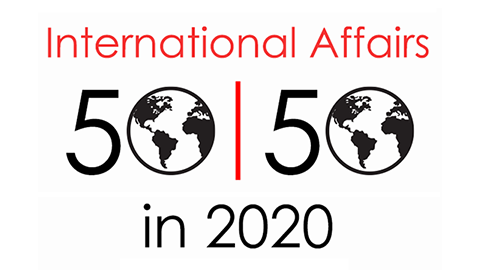

收录于合集 #新刊速递 123个
期刊简介

《国际事务》是国际关系领域的一流学术期刊，也是多学科综合性学术期刊。本刊于1992年由伦敦皇家国际事务研究所查塔姆学院(Chatham House)创立，内容来源广泛，力图囊括业内专家、学术新秀对重点、热点问题的最新思考。期刊影响因子为3.748，在91种国际关系类刊物中位列第5名。
本期编委
编译：邢 戎 晋 玉 胡 贺 缪高意 周心培 李雯珲
审校：胡 贺 李雯珲 朱文菡 丁伟航
排版：王国伟
本期目录
1.什么是国际事务中的女性主义视角？ ： 理论与实践
Well, what is the feminist perspective on international affairs? theory/
practice
2.全球金融的日常实践： 性别与多元的监管政治
The everyday practices of global finance: gender and regulatory politics of
‘diversity’
3.勇敢地批判性暴力： 回应2018年诺贝尔和平奖
Courageously critiquing sexual violence: responding to the 2018 Nobel Peace
Prize
4.标记失败，创造空间： 联合国安理会政策中的女性主义干预
Marking failure, making space: feminist interventions in Security Council
policy
5.秘密、间谍和发展中国家： 超越“五眼”联盟的情报研究
Secrecy, spies and the global South: intelligence studies beyond the ‘Five
Eyes’ alliance
6.英国脱欧和联合国安理会： 英国影响力持续下降？
Brexit and the UN Security Council: declining British influence?
7.英国脱欧认同与英国公众对中国的看法
Brexit identities and British public opinion on China
8.中国的象牙禁令： 通过野生动物保护增强软实力
China’s ivory bans: enhancing soft power through wildlife conservation
9.太空竞赛的社会建构： 过去与现在
The social construction of the space race: then and now
10.作为大国竞争战略的经济遏制
Economic containment as a strategy of Great Power competition
摘要译文
1.
什么是国际事务中的女性主义视角？：理论与实践
【题目】 Well, what is the feminist perspective on international affairs?: theory/ practice
【作者】 Helen M. Kinsella（美国明尼苏达大学）；Laura J. Shepherd（澳大利亚新南威尔士大学）
【摘要】 这篇简介详细阐述了玛丽西娅·扎勒斯基（Marysia
Zalewski）在过去三十年中所做的大量工作，这些工作不仅论证了女性主义模式为世界政治提供了有益之言、有用之策，而且为研究政治和国际关系的学者提供了一个强有力的框架。正如研讨会所述，她的作品深深植根于女性主义的理论和实践之中，其影响远远超出了学科的范畴，并触及了经验主义和国际政治，对金融、恐怖主义和暴力都产生了显而易见的影响。
This brief introduction elaborates on Marysia Zalewski’s significant body of
work over the past three decades, which provides not only ample evidence of
the benefits of feminist modes of encountering world politics, but also a
robust framework for enquiry for scholars of politics and international
relations. Her work, while deeply rooted in feminist theories and practice,
has implications which go far beyond disciplinary determinations and touch
upon, as the symposium demonstrates, the empirics, and the impact of
international politics writ large, from finance to terrorism to violence.
【编译】邢戎
【校对】胡贺
2.
全球金融的日常实践 ： 性别与多元的监管政治
【题目】 The everyday practices of global finance: gender and regulatory politics of ‘diversity’
【作者】 Penny Griffin（萨勒姆学院）
【摘要】
本文认为，全球金融实践提供了丰富的机会，来考察日常生活中的性别体现，但在金融生活中，性别体现受到高度监管。全球金融危机爆发后，全球金融的“多元议程”兴起，本文探求了这种“多元”是如何塑造国际金融服务业的，是否挑战了全球金融性别权力的再生产。近来，女性主义政治经济学的创新对全球政治经济学的研究者们提出挑战，以探究（全球金融的）日常实践是如何体现性别和监管权力的。本文应对这一挑战，分析了金融服务中“多元”的兴起所揭示的性别权力和日常经济实践的重要交汇点。本文运用玛丽西娅·扎勒斯基（Marysia
Zalewski）的理论框架进行拓展研究，探究性别是如何以不被承认的方式影响着全球金融，而这又是持续和不确定的。本文提出，全球金融中“多元议程”的实践及其未来提供了一个窗口，以透视全球金融的持续失败，来重新配置起基础作用的男性主义，并使金融行为者开始重视国际金融赖以形成的、为之基础的性别神话。
This article argues that practices of global finance provide a rich opportunity
to consider gender’s embodiment in everyday, but highly regulatory, financial
life. Tracing a pathway through the rise of the ‘diversity agenda’ in global
finance in the wake of the global financial crisis, the article asks how
‘diversity’ has shaped the global financial services industry, and whether it
has challenged the reproduction of gendered power in global finance. Recent,
innovative feminist political economy work has laid out a clear challenge to
researchers of the global political economy to explore how everyday practices
have become significant sites of gendered, regulatory power, and this article
takes up this challenge, analysing how the rise of ‘diversity’ in financial
services reveals the crucial intersections of gendered power and everyday
economic practices. Using a conceptual framework drawn explicitly from Marysia
Zalewski’s work, this article advances critical inquiry into how gender has
become an often unacknowledged way of writing the world of global finance, in
ongoing, and problematic, ways. It proposes that the practices and futures of
the diversity agenda in global finance provide a window into the persistent
failure of global finance to reconfigure its foundational masculinism, and asks
that financial actors begin to take seriously the foundational, gendered myths
on which global finance has been built.
【编译】邢戎
【校对】胡贺
3.
勇敢地批判性暴力：回应 2018 年诺贝尔和平奖
【题目】 Courageously critiquing sexual violence: responding to the 2018 Nobel Peace Prize
【作者】 Maria Stern（瑞典哥德堡大学）
【摘要】 女权主义学者玛丽西娅·扎勒斯基（Marysia Zalewski）的作品告诉我们要警惕墨守成规，要制定连贯的行动计划，要慎言已经充分了解并掌握关于危险、暴力、以及其主体和救济的有关知识，要避免大张旗鼓的宣扬女性主义的到来，要谨慎对待看似已经取得胜利的研究成果。扎勒斯基的著作一直用不同的方式提醒着人们：“我们/她甚至连性别是什么、它的作用是什么都不知道”。这看似简单的话语并不是对性别主流化政策中研究空白的轻率回应，而是在我们所读、所写的有关国际关系理论、女性主义、性别暴力的文本中的醒目批注。然而，在我们急于理解和确认性别伤害的有效性和重要性寻求补救的过程中，常常遗忘这一深刻的教训。本文通过回顾扎勒斯基的作品，审慎、批判地回应2018年诺贝尔和平奖。本文无意深入探讨诺贝尔和平奖中所蕴含的政治亦或奖项本身的影响，而是把2018年诺贝尔和平奖作为一个开始对性暴力进行反思与批判的标志时刻。 Marysia Zalewski’s work has taught us, as a collective of feminist scholars, to be cautious of neat instruction manuals and coherently set out plans of action; of claims to sure knowledge about danger, violence, and its subjects and remedies; of the fanfare of grand arrivals; and of the quieter staking of ground that has been seemingly won. Zalewski has persistently reminded us in different ways that we/ she does ‘not even know what gender is or does’. Far from a flippant response to the emptiness of gender mainstreaming policies, this seemingly simple statement instead serves as a glaring post-it note on the margins of our texts about International Relations theory, feminism, sex/gender and violence— both those that we read, as well as those that we write. However, this lesson is often forgotten in our rush to understand and establish gendered harms as valid and important, and to seek their redress. Gleaning insights from Zalewski’s work, this article critically considers possible responses to the 2018 Nobel Peace Prize. Its aim is not to delve into a discussion of the politics or effects of the Peace Prize as such, but to instead use the 2018 Peace Prize as a marker—a moment to consider the possibility for critique in relation to sexual violence.
【编译】晋玉
【校对】胡贺
4.
标记 失败，创造空间：联合国安理会政策中的女性主义干预
【题目】 Marking failure, making space: feminist interventions in Security Council policy
【作者】 Sam Cook
【摘要】 女性主义对国际政治的干预通常被认为是对政策文本的干预。这些政策（本文中指联合国安理会关于女性、和平和安全的决议）通常是女性主义主张努力的终点，或是对女性主义分析和评判的起点。玛丽西娅·扎勒斯基（Marysia Zalewski）在其著作中，借助在对女性主义政策的批判中形成的女性主义的失败（feminist failure）这一概念，以不同的方式思考（和讲述）国际政治空间。在本文中，作者对其进行了回应。受扎勒斯基的“女性主义国际关系：精致的尸体”的启发，本文探讨了由相关政策和对其的批判形成的物质上和观念上的空间。它吸收并反思了女性主义对妇女、和平与安全政策的批评中常见的一种叙事手法，即我们绝不能使妇女享有战争上的安全，来反思失败的必然性和理论与实践之间明显的界限。作者借助扎勒斯基提出的创造性干预和她对“日常垃圾”价值的认可（这里指从纽约中央车站到联合国总部的小路），沉迷于特定蓝色阴影的沉思，以及脚注位置确认的内容，开始跟踪从具体的实践中产生的国际政治空间。 Feminist interventions in international politics are, more often than not, understood (and visible) as interventions in relation to policy documents. These policies—in this case the United Nations Security Council’s resolutions on Women, Peace and Security—often feature as the end point of feminist advocacy efforts or as the starting point for feminist analysis and critique. In this article the author responds to the provocations throughout Marysia Zalewski’s work to think (and tell) the spaces of international politics differently, in this case by working with the concept of feminist failure as it is produced in feminist policy critique. Inspired by Zalewski’s Feminist International Relations: exquisite corpse, the article explores the material and imaginary spaces in which both policies and critique are produced. It picks up and reflects upon a narrative refrain recognizable in feminist critiques on Women, Peace and Security policy—that we must not make war safe for women—as a way to reflect on the inevitability of failure and the ostensible boundaries between theory and practice. The author takes permission from Zalewski’s creative interventions and her recognition of the value of the ‘detritus of the everyday’—here a walk from New York’s Grand Central Station to the UN Headquarters, musings on the flash of a particular shade of blue, and the contents of a footnoted acknowledgement, begin to trace an international political space that is produced through embodied and quotidian practice.
【编译】李雯珲
【校对】丁伟航
5. ****
秘密、间谍和发展中国家： 超越“五眼”联盟的情报研究
【题目】 Secrecy, spies and the global South: intelligence studies beyond the ‘Five Eyes’ alliance
【作者】 Zakia Shiraz（莱斯特大学），Richard J. Aldrich（华威大学）
【摘要】 秘密和间谍研究长期以来被英美国家主导。最近几年开始有一些学者将研究视角转向全球其他地区，包括发展中国家。这在一定程度上是因为人们对“阿拉伯之春”和“管理式民主”或“可控民主”（managed democracy）产生了浓厚的兴趣，并将更多的秘密机构置于聚光灯下。然而，研究方法仍然被来自“五眼”联盟英语国家及其欧洲先驱者的概念和方法所主导。本文呼吁重新审视情报研究的研究策略和那些理论化的监视，这两个领域都有很多值得从区域研究和发展研究中学习的地方，特别是在研究实践和伦理领域。如果越来越多专门从事情报工作的学者真心希望向前迈进，研究发展中国家，他们就需要重新思考自己的工具，并向其他学科学习。我们认为有一个丰富的传统可以借鉴。 The study of secrecy and spies remain subjects dominated by Anglo-American experiences. In recent years there has been some effort to refocus the lens of research upon ‘intelligence elsewhere’, including the global South. This is partly because of intense interest in the Arab Spring and ‘managed democracy’ placing a wider range of secret services under the spotlight. However, the approach to research is still dominated by concepts and methods derived from studying the English-speaking states of the ‘Five Eyes’ alliance and their European outriders. This article calls for a re-examination of research strategies for Intelligence Studies and for those theorizing surveillance, suggesting that both fields have much to learn from area studies and development studies, especially in the realm of research practice and ethics. If the growing number of academics specializing in intelligence genuinely wish to move forward and examine the global South, they will need to rethink their tool-kit and learn from other disciplines. We suggest there is a rich tradition to draw upon.
【编译】李雯珲
【校对】丁伟航
6. ****
英国脱欧和联合国安理会：英国影响力持续下降？
【题目】 Brexit and the UN Security Council: declining British influence?
【作者】 Jess Gifkins(曼切斯特大学)；Samuel Jarvis(兰卡斯特大学)；Jason Ralph(利兹大学)
【摘要】 英国脱欧所产生的影响已超出英国和欧盟范围。本文分析了英国脱欧公投对于其在联合国安理会中政治资本的影响，这是目前尚未受到足够重视的脱欧影响之一。通过对大量精英进行访谈，我们发现英国在安理会中仍拥有相当可观的政治资本，被视为极具影响力的行为体。但是，英国脱欧所付出的声誉代价却在败坏其形象。通过英国在索马里和也门发挥作用的案例研究，我们探讨英国如何在欧盟和安理会的双重角色中进一步扩展自己的利益，以及英国脱欧之后贸易与人权之间的紧张关系带来的风险。我们还分析了在安理会内产生影响需要的条件，并表明应更加注重外交实践。在安理会的影响力是通过掌握高超的外交技巧和一位享有盛誉的常驻联合国代表获得的。英国通过担当安理会议程中人道主义和人权方面的领袖积累政治资本，但是，其良好的声誉在退出欧盟后有破裂的风险。
The United Kingdom’s decision to leave the European Union has ramifications beyond the UK and the EU. This article analyses the impact of the Brexit referendum on the UK’s political capital in the United Nations Security Council; a dimension of Brexit that has received little attention thus far. Drawing on extensive elite interviews we show that the UK has considerable political capital in the Council, where it is seen as one of the most effective actors, but the reputational costs of Brexit are tarnishing this image. With case-studies on the UK’s role in Somalia and Yemen we show how the UK has been able to further its interests with dual roles in the EU and Security Council, and the risks posed by tensions between trade and human rights after Brexit. We also analyse what it takes to be influential within the Security Council and argue that more attention should be paid to the practices of diplomacy. Influence is gained via penholding, strong diplomatic skill and a well-regarded UN permanent representative. The UK accrues political capital as a leader on the humanitarian and human rights side of the Council’s agenda, but this reputation is at risk as it exits the EU.
【编译】缪高意
【校对】朱文函
7. ****
英国脱欧认同与英国公众对中国的看法
【题目】 Brexit identities and British public opinion on China
【作者】 Wilfred M. Chow(香港大学)；Enze Han(香港大学)；Xiaojun Li(不列颠哥伦比亚大学)
【摘要】 许多研究都探讨了民意在英国外交政策决策过程中的重要性，这些研究主要集中在英国与美国、欧盟的关系方面。但少有针对英国对国际体系中其他主要国家（如中国等新兴大国）的外交政策的民意研究。我们在脱欧公投之后开展民意调查，以弥合这一知识鸿沟。我们的研究结果表明，英国公众普遍对中国的崛起感到不安，但对于接下来的双边关系应该如何管理也有着务实的看法。更重要的是，在脱欧认同上处于相对立两极的英国公众，对于中国的看法也呈现出明显分裂的两极。那些强烈认同脱欧的人（以对欧盟的厌恶和对移民的反感来衡量）更有可能对中国的全球领导地位持有负面看法，更加怀疑中国会构成军事威胁。相比之下，那些支持留欧的人（相信英国留在欧盟内部并有更多的移民对英国来说更好）更倾向于与中国更密切地接触，对中国在国际社会/全球共同体中的地位有更积极的整体看法。
Many studies have explored the importance of public opinion in British foreign policy decision-making, especially when it comes to the UK’s relations with the United States and the European Union. Despite its importance, there is a dearth of research on public opinion about British foreign policy towards other major players in the international system, such as emerging powers like China. We have addressed this knowledge gap by conducting a public opinion survey in the UK after the Brexit referendum. Our research findings indicate that the British public at large finds China’s rise disconcerting, but is also pragmatic in its understanding of how the ensuing bilateral relations should be managed. More importantly, our results show that views on China are clearly split between the two opposing Brexit identities. Those who subscribe strongly to the Leave identity, measured by their aversion to the EU and antipathy towards immigration, are also more likely to hold negative perceptions of Chinese global leadership and be more suspicious of China as a military threat. In contrast, those who espouse a Remain identity—that is, believe that Britain would be better served within the EU and with more immigrants—are more likely to prefer closer engagement with China and to have a more positive outlook overall on China’s place within the global community.
【编译】缪高意
【校对】朱文函
8. ****
中国的象牙禁令：通过野生动物保护增强软实力
【题目】 China’s ivory bans: enhancing soft power through wildlife conservation
【作者】 Jonas Gamso，亚利桑那州立大学雷鸟全球管理学院助理教授。
【摘要】 几个世纪以来，中国一直是象牙的主要市场。不过，中国政府最近颁布了禁止象牙进出口（2015年）和禁止国内象牙贸易（2017年）的禁令。这似是对国内外社会活动人士的密集示威和公然羞辱的回应，这些社会活动人士历数了大象数目的下降及其与中国的关联。然而，这种羞辱式叙述（shaming- narrative）与中国决策的传统智慧相悖：中国通常抗拒国际压力，而其威权政府被认为在很大程度上置国内市民社会的呼声于不顾。本文试图协调中国的象牙禁令与这些有关中国决策的传统观点。作者认为，中国政府认识到了在国际注视下，禁止象牙贸易独有裨益。这样做既增强了中国的软实力，又不影响中国的主权或发展。在中国境内外运作的非政府组织也发挥了作用：国内的非政府组织为颁布禁令塑造公众舆论基础，而在国外的非政府组织则带头进行公关宣传，让外国观众看到中国人对象牙的需求。后者的努力加大了对中国政府的压力，迫使其决定控制象牙市场以增强软实力。
China has been a major market for elephant ivory for centuries. However, the Chinese government recently enacted bans on imports and exports of ivory (2015) and on the domestic ivory trade (2017). These bans appear to have come in response to intensive influence campaigns and public shaming from domestic and foreign activists, who cited declining elephant populations and highlighted China’s role. However, this shaming-narrative is at odds with conventional wisdom regarding Chinese policy-making: China typically resists international pressures and its authoritarian government is thought to be largely insulated from domestic efforts by civil society groups. This article reconciles Beijing’s ivory policy with these conventional beliefs about policy-making in China. I argue that the Chinese government saw unique benefits to banning the ivory trade, under growing international scrutiny, as doing so enhanced Chinese soft power while having very little impact on its sovereignty or development. Non-government organizations (NGOs) operating both inside and outside of China played a role as well: NGOs in China helped to shift Chinese public opinion towards favoring the bans, while those operating abroad led public relations efforts to publicize Chinese demand for ivory to foreign audiences. Efforts by the latter group of NGOs intensified pressure on the Chinese government to rein in the ivory market, while increasing the soft power benefits that banning ivory would bring to Beijing.
【编译】周心培
【校对】朱文菡
9. ****
太空竞赛的社会建构：过去与现在
【题目】 The social construction of the space race: then and now
【作者】 Mai’a K. Davis Cross（美国东北大学）
【摘要】
美国太空部队的成立导致了航天大国之间竞争和威胁意识的增强。世界各地的许多政府高级官员和专家认为，太空将不可避免地成为下一个战场，无论是在国家之间，还是私人公司之间，或两者兼而有之。印度成功地炸毁了一颗卫星，中国的探测器着陆在月球背面，许多其他国家也迅速发展了发射能力。“太空竞赛2.0”一词被越来越多地引用。但我们是在一场新的太空竞赛中，还是在一个新的太空时代的边缘？本文认为，在过去70年里，尽管政府为太空军事化做出了许多努力，但总体而言，非国家行为体已经确保了即使在冷战最激烈的时期，空间仍然是人类互动的高度合作领域。虽然表面上有一种基于威胁的竞争性叙述，但作者认为，这在很大程度上是社会建构的。通过对新的档案研究和参与者的观察，作者为理解当今空间行为体日益多样化的领域提供了历史背景。
The proposed creation of a US Space Force has led to a ratcheting up of a
sense of competition and threat among spacefaring powers. Many top government
officials and experts around the world believe that space will inevitably
become the next battlefield, either among countries, or private companies, or
both. India successfully blew up a satellite, China landed a probe on the dark
side of the moon and many other countries have rapidly developed launch
capabilities. The term ‘Space Race 2.0’ is increasingly invoked. But are we in
the midst of a new space race, or on the verge of a new space age? This
article argues that despite many governmental efforts to militarize space over
the past 70 years, on the whole, non-state actors have ensured that space has
been a highly cooperative realm of human interaction, even during the height
of the Cold War. While on the surface there has been a narrative of threat-
based competition, the author argues that this has largely been socially
constructed. Drawing upon fresh archival research and participant observation,
the author provides the historical context for understanding the increasingly
diverse field of space actors today.
【编译】丁伟航
【校对】李雯珲
10. ****
作为大国竞争战略的经济遏制
【题目】 Economic containment as a strategy of Great Power competition
【作者】 Dong Jung Kim（耶鲁-新加坡国立大学学院）
【摘要】 在有关美国对中国的反应的著述中，经济遏制一再受到关注。然而，经济遏制作为大国竞争的一种独特战略，其属性仍不清楚。此外，在理论上，一个主导国能够对一个挑战国采取经济遏制措施的条件仍然是模糊的。本文首先提出，经济遏制是指利用经济政策削弱目标国发动军事侵略的物质能力，而不是在特定问题上影响竞争对手的行为。然后，本文认为，当主导国有能力通过经济遏制给挑战国造成更多损失时，经济遏制便成为一种可行的选择，而这种能力在很大程度上取决于替代经济伙伴的可利用性。当主导国由于替代经济伙伴的存在而不能有效地给挑战国造成更多损失时，最好避免经济遏制。作者通过对冷战时期美国对苏联的反应的个案研究来证实这些论点。文章最后分析了美国最近对中国的经济制约的性质。
Economic containment has garnered repeated attention in the discourse about the United States’ response to China. Yet, the attributes of economic containment as a distinct strategy of Great Power competition remain unclear. Moreover, the conditions under which a leading power can employ economic containment against a challenging power remain theoretically unelaborated. This article first suggests that economic containment refers to the use of economic policies to weaken the targeted state’s material capacity to start military aggression, rather than to influence the competitor’s behaviour over a specific issue. Then, this article suggests that economic containment becomes a viable option when the leading power has the ability to inflict more losses on the challenging power through economic restrictions, and this ability is largely determined by the availability of alternative economic partners. When the leading power cannot effectively inflict more losses on the challenging power due to the presence of alternative economic partners, it is better off avoiding economic containment. The author substantiates these arguments through case-studies of the United States’ responses to the Soviet Union during the Cold War. The article concludes by examining the nature of the United States’ recent economic restrictions against China.
【编译】丁伟航
【校对】李雯珲
点击左下角“ 阅读原文”可获取本期英文版原文
扫下方二维码查看往期精彩
【新刊速递】第01期 | Review of International Studies Vol.45, No.4, 2019
【新刊速递】第02期 | International Relations Vol.33, No.3, 2019
【新刊速递】第03期 | International Organization Vol.73, No.3, 2019
【新刊速递】第04期 | World Politics, Vol.71, No.4, 2019
【新刊速递】第05期 | European Journal of International Relations
【新刊速递】第06期 | Security Studies, Vol.28, No.4, 2019
【新刊速递】第07期|International Security, Vol 44, No. 2, 2019
【新刊速递】第08期| Cambridge Review of International Affairs,Vol.32,No.4
【新刊速递】第09期| International Relations of Asia-Pacific Vol.19,No.3
【新刊速递】第10期 | International Studies Review, Volume.21, No.3, 2019
【新刊速递】第11期|Cooperation and Conflict, Vol. 54, No. 4, 2019

国政学人
支持学术公益与知识传播
微信扫一扫赞赏作者 __赞赏
已喜欢，对作者说句悄悄话
取消 __
发送给作者
发送
最多40字，当前共字
上一页 1/3 下一页
长按二维码向我转账
支持学术公益与知识传播
受苹果公司新规定影响，微信 iOS 版的赞赏功能被关闭，可通过二维码转账支持公众号。